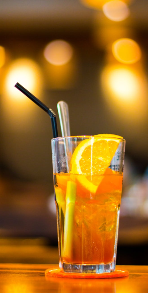
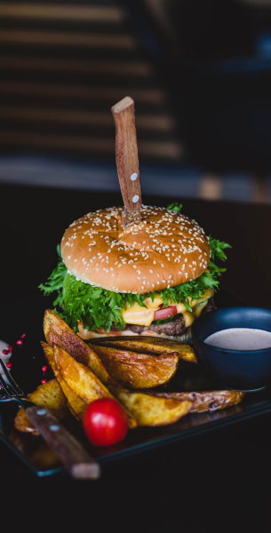
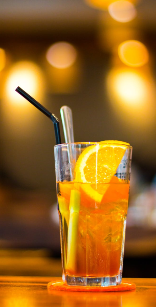
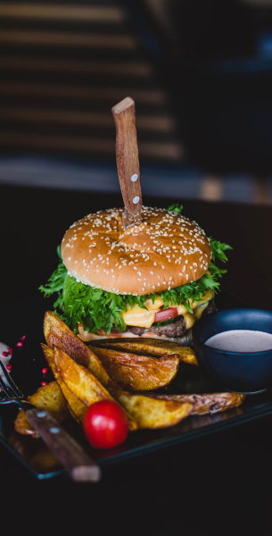

Welcome to
DeCafe!


Open Everyday
7 am - 8 pm
We are All About
DeCafe began its journey in October 2010, opening its doors as a medium neighbourhood cafe in Manchester. Over the past decade, we have grown into a local favourite, known for our welcoming atmosphere, delicious dishes, great coffee, and excellent service

Our Menus
Our cafe combines the modern spirit of the city with the warmth of hospitality, creating a unique atmosphere for each guest
 




Our Blog
A collection of our blog about the DeCafe experience. Stay up-to date with new menu specials, events, functions, special diary dates

September 30, 2024
History of Coffee
Wild coffee plants (Coffea species) are thought to have been native to an Ethiopian plateau region known as Kefa (Kaffa), though the exact history of their origin and domestication remains unclear

August 23, 2024
Point of Origin for Coffee Beans
Coffee beans are predominantly grown in three areas of the world: Central and South America, Africa, and Asia. These three geographical locations have vastly different qualities fan of creamy risotto

July 26, 2024
Vegan & Vegetable Options
We pride ourselves on offering a little something for every taste. Whether you're a pasta lover, a fan of creamy risotto, or just in search of a fresh, delicious meal, our menu is packed with options sure to satisfy any craving